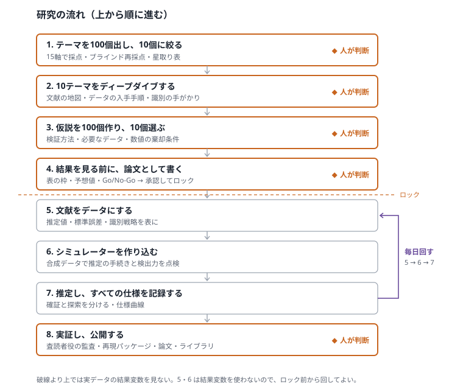
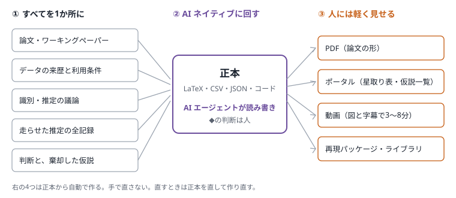

AI ネイティブ経済学ラボとは
3行で言うと
- 問いと研究デザインを大量に作って、速く捨てる。 AI が論文を大量に読み、テーマ100→10→1、仮説100→10 と絞る。選ぶのは人である。
- 結果を見る前に、論文を大方書いておく。 仮説・推定の方法・予想される結果・棄却条件を先に書き、弱い仮説は紙の上で落とす。
- すべてを1か所（正本）に書き、人には軽く見せる。 走らせた推定も棄却した仮説も残す。図・動画・ポータルで、誰でも3分で全体をつかめるようにする。
全体像：上から順に進む

人が判断する関門（◆）は5か所ある。①テーマを10個に絞る、②着手するテーマを決める、③仮説を10個選ぶ、④結果前論文を承認してロックする、⑧公開するか決める。 残りの⑤⑥⑦は AI が毎日回し、人は結果を確かめる。
大事にする3つの原則

| 原則 | 意味 | 具体的には |
|---|---|---|
| ① すべてを1か所に | 文献・データの来歴・識別の議論・判断・棄却した仮説を、すべて正本に書く | 会話で終わらせない。PDF とポータルは正本から自動で作る。古い結果も消さない |
| ② AI ネイティブに回す | 調査・整理・執筆・作図・コード・推定は、まず AI エージェントがやる | 人の仕事は「問いを立てる・◆で判断する・データの利用許可を取る・AI の出力を確かめる」の4つに絞る |
| ③ 人には軽く見せる | 情報が増えるほど認知負荷は上がる。量を増やすほど、見せ方を軽くする | 結論を先に書く。1枚図・星取り表・動画・決まった箱を使う |
3つのトラック
因果推論だけに絞らない。テーマには必ずトラックを1つ付け、同じ軸で比べる。
| トラック | 何をする研究か | 「結果を見る前に書く」もの | シミュレーター（段階6） | 主な成果 |
|---|---|---|---|---|
| 因果推論・実証 | 政策や出来事の効果を、外生変動を使って推定する | 推定対象・推定式・標本の定義・反証テスト | 合成データで推定量の偏りと検出力を点検する | 実証論文 |
| 構造推定 | 経済モデルのパラメータを推定し、反実仮想を計算する | モデル・推定に使うモーメント・当てはまりを確かめる取り置きデータ | モデルそのもの。合成データでパラメータを回収できるか | 実証論文＋推定コード |
| 推定量・計量手法 | 新しい推定量・検定・計算手法を作り、性質を示す | 主張する性質・比べる既存手法・シミュレーションの設定と評価指標 | モンテカルロ実験が主役 | 手法論文＋ライブラリ |
通常の研究とどこが違うか
| 通常の研究 | AI ネイティブ経済学ラボ | |
|---|---|---|
| テーマの選び方 | 手元のデータと関心から1つ選ぶ | 100個を15軸で採点し、根拠を残して10→1に絞る |
| 先行研究 | 数十本を人が読む | 数百本を AI が読み、推定値・標準誤差・手法を表にする |
| 仮説 | 少数を温める | 100個作って10個選ぶ。全部に数値の棄却条件を付ける |
| 論文を書く時期 | 結果が出てから | 結果を見る前に書く。表の枠と予想値、Go/No-Go まで書く |
| 仕様の探索 | 記録に残らない | 走らせた推定は全件残る。何本試したかが分かる |
| 査読 | 投稿後に初めて受ける | 投稿前に、別のエージェントが査読者として監査する |
| 成果 | 論文 | 論文に加えて、再現パッケージとライブラリ |
| 知の置き場 | 人の頭の中 | ポータル。新しく来た人も AI も、同じ地図から始められる |
8つの段階：何をして、何を大事にするか
各段階で AI が下書きし、人が確かめる。◆の段階では、人が判断して理由を decision 箱に書く。
1. テーマを100個出し、10個に絞る ◆
- AI: 分野とトラックを横断して候補を100個出し、15軸で採点する。別のエージェントがブラインドで再採点し、甘辛を補正する。
- 人: ポータルの星取り表で、4群の点を見比べる。重く見たい項目で並べ替え、偏らない組合せで上位10個を承認する。
- 大事にすること: 捨てる勇気。「識別できるか」「検出できるか」を重要度と同じ重さで見る。落とした理由も残す。
- 成果物:
theme/research/themes.csv,scored.csv、theme/paper/main.tex - 実例: 研究テーマをどう選ぶか、星取り表（計量経済学の100テーマの一次採点）
2. 10テーマをディープダイブする ◆
- AI: 1テーマ1文書。文献の地図・未解決の問い・使えるデータと入手手順・識別の手がかり・競合・6か月計画を書く。
- 人: 文書と動画を見て、着手するテーマを1〜2個に決める。
- 大事にすること: 読んだ人が5分で選べること。データは「あるらしい」で終わらせず、申請手順・期間・費用・公開可否まで調べる。
- 成果物:
deepdive/<TID>.md
3. 仮説を100個作り、10個選ぶ ◆
- AI: 先行研究から、5つの型（延長・尖り・組合せ・異分野転用・追試と拡張）で仮説を作る。各仮説に、根拠論文・検証方法・必要なデータ・数値の成功基準と棄却条件を付ける。
- 人: 信頼性・検出力・新規性・重要度で10個を選ぶ。
- 大事にすること: 数値の棄却条件がない仮説は、仮説として扱わない。どちらの結果でも知見になる問いを優先する。
- 成果物:
<project>/hypotheses/hypotheses.json、main.texのhypothesis箱
4. 結果を見る前に、論文として書く ◆
- AI: 要旨→背景→先行研究→仮説→データ→方法→予想される結果→考察→Go/No-Go の順で、論文の形で書く。表は枠だけ作り、予想値は「仮定」と明記する。
- 人: 「この結果が出たら何が言えるか」を確かめる。良ければ承認し、ロックする（下の「ロックとは何か」）。
- 大事にすること: 書いてみて弱い仮説は、時間を使う前に落とす。方法は再現できる粒度で書く。
- 成果物:
<project>/paper/main.tex、<project>/prereg/LOCK.json
5. 文献をデータにする
- AI: 論文から推定値・標準誤差・標本・手法を表にする。「なぜその仕様か」の記述は文章のまま出典つきで残す。
- 人: 抽出結果を原文と抜き取りで照合する（例: 50件）。精度を記録する。
- 大事にすること: 効果の大きさの見当はここから付ける。都合のよい1本だけを使わない。
- 成果物:
literature/papers.csv（文献マスター表。1文献1行）、<project>/research/estimates.csv（1推定値1行）
6. シミュレーターを作り込む
- AI: 真の答えが分かっている合成データを作り、推定の手続きが答えを回収できるかを測る。構造推定ではモデル自体をここに置く。手法の研究ではここが主役になる。
- 人: 合成データの前提が、制度と実データの成り立ちに合っているか確かめる。
- 大事にすること: うまく回収できない設定こそ記録する。分析コードは合成データで端から端まで通してから、実データに当てる。
- 成果物:
<project>/sim/、<project>/data/sim/
7. 推定し、すべての仕様を記録する（5〜7は毎日回す）
- AI: ロックした仕様を推定する。走らせた推定は全件
log/specs.csvに残す。頑健性と反証テストを出し、result箱を日付つきで足す。 - 人: 制度の知識で結果を疑う。データの異常を確かめる。
- 大事にすること: 確証と探索を混ぜない。探索で見つけたことは「次の仮説」であり、別のデータで確かめるまで結論にしない。
- 成果物:
<project>/log/specs.csv、main.texのresult箱
8. 実証し、公開する ◆
- AI: 結果を成功基準と照合し、支持／棄却の判定を下書きする。別のエージェントが査読者として監査する。再現パッケージとライブラリを整える。
- 人: Go／No-Go／ピボットを決める。出す先（学会・査読誌・ライブラリの公開）を決める。
- 大事にすること: 公開の前に、データの利用規約・倫理審査・秘匿審査の要否を確かめる。棄却された仮説も結果として残す。
- 成果物:
research/audit-*.md、decision箱、再現パッケージ、ライブラリ
ロックとは何か
元のラボの「実験の前に論文を書く」に当たる。化学では、実験する前には結果が存在しない。 経済学ではデータが先に手元にあるので、「まだ結果を見ていない」という時点を自分で作る必要がある。その時点に押す日付印がロックである。
| 内容 | |
|---|---|
| 何を固定するか | 段階4で書いた論文のうち、①仮説、②推定の方法（推定式・モデル）、③標本の定義、④主な結果変数、⑤成功基準と棄却条件 |
| どうやって | 人が承認した後に python3 tools/lock_pap.py <project> を実行する。paper/main.tex と hypotheses.json の指紋（ハッシュ値）と日時が prereg/LOCK.json に記録される。これをコミットする |
| ロックの前にしてよいこと | 文献を読む。合成データでコードを書いて通す。実データの説明変数と標本の構成（件数・欠損）を見る |
| ロックの前にしてはいけないこと | 実データの結果変数を見る・集計する・図にする・推定する。log_spec() は、未ロックのまま実データの推定を記録しようとすると止まる |
| ロックの後 | 固定した仕様で推定する（これが「確証」）。結果を result 箱に足していく |
| 後から変えたくなったら | 変えてよい。ただし理由と日付を更新履歴に書き、もう一度ロックする。lock_pap.py --check が、前回のロックから変わったファイルを教える |
| 結果を見て思いついた分析 | やってよい。「探索」と名札を付けて記録し、本文でも探索と書く。確証と同じ重みでは語らない |
ロックは、仕様を変えることを禁じる仕組みではない。いつ・何を・なぜ変えたかが残るようにする仕組みである。 守れないこともある。記録を通さずにデータを見ることは止められないし、リポジトリ内の記録は第三者への証明としては弱い。 強い証明が要るときは、外部の登録簿にも出す。
データの秘匿区分（AI に何を見せてよいか）
Claude Code も外部の AI サービスである。データを読ませることは、外部に送ることと同じである（ETHICS.md 第4条）。
| 区分 | 例 | エージェントに許すこと |
|---|---|---|
| T0 公開 | 公的統計の公表値、公開パネル、公開済みの再現データ、合成データ | 生データを読む・推定する |
| T1 制限 | 利用申請が要る個票、購入データ | コードを書く。集計値・推定結果・ログだけを見る |
| T2 秘匿 | オンサイト施設の行政データ、個人が特定できる情報 | 合成データでコードを書くだけ。実行は人が行う |
区分は <project>/data/README.md に書く。書かれていないデータは T2 として扱う。
道具の使い分け
| 道具 | 何に使う | 注意 |
|---|---|---|
| Claude Code（このリポジトリ） | 調査・執筆・コード・推定・作図・ビルド | 成果は必ずファイル（正本）に書かせる |
ポータル（portal/） | 全員の共通の地図。星取り表・文書・動画 | 手で直さない。正本を直して python3 portal/build.py |
動画（<project>/video/） | 1本の文書を、図と字幕で3〜8分にまとめる | 内容は正本にあるものだけ。規約は common/video/STYLE.md |
| R | 推定と作図の主力（<project>/code/） | 推定は log_spec() を通す |
| Python | 道具類と、公開するライブラリ（<project>/python/） | 推定に使うときは speclog.py を通す |
文献マスター表（literature/papers.csv） | 読んだ文献の唯一の正。各プロジェクトの文献ファイルはここから作る | 論文の本体は保存しない。読んだ深さを正直に書く |
| Crossref API | DOI の照合（python3 tools/litdb.py verify） | 照合できない DOI は書かない |
| LaTeX（LuaLaTeX） | 正本と PDF | ウェブで崩れない書き方は AGENTS.md §3 |
進め方の指示（人もエージェントも、この順で）
- 今どこにいるか確かめる。
<project>/README.mdとmain.texの「判断と次の一手」を読み、図1のどの段階か言えるようにする。 - ロックの状態を確かめる。
python3 tools/lock_pap.py <project> --check。 - その段階の成果物を作る。 新しいファイルを増やさず、同じ
main.texに積み上げる。 - 事実には出典を付ける。 推測は「仮説」「筆者の見解」と書く。推定値には標準誤差か信頼区間・n を付ける。
- 図にする。 1節に1枚を目安に、言いたいことを図で示す。大きな文書には動画を付ける。
- ◆では人が判断する。 判断・理由・次の一手（誰が・いつまでに）を
decision箱に書く。 - ビルドして見る。
latexmkで PDF（エラー0・未定義引用0）、python3 portal/build.pyでポータル（変換警告0）。 - 更新履歴に1行足す。
AI への頼み方（コピーして使う）
[1] <分野> で研究テーマの候補を100個出し、theme/research/00_plan.md の15軸で採点して。
3つのトラックを混ぜること。根拠 URL を付け、python3 tools/score_themes.py で順位を出し、ポータルを更新して。
[2] テーマ <TID> をディープダイブして deepdive/<TID>.md に書いて。データは入手手順・期間・費用・秘匿区分まで調べて。
[3] <project> の文献から、5つの型で仮説を100個作り、検証方法・必要なデータ・数値の成功基準と棄却条件を付けて
hypotheses/hypotheses.json に書いて。上位10個を main.tex の hypothesis 箱に書いて。
[4] <project> の仮説 H<n> を、結果を見る前の論文として paper/main.tex に書いて。表は枠だけ、予想値は仮定と明記。
sim/ で検出力を出し、Go/No-Go 基準を入れて。実データの結果変数には触れないで。
[5] <project> の文献から推定値・標準誤差・n・手法を抽出して research/estimates.csv にして。
ランダムに50件を原文と照合し、精度を報告して。
[7] ロック済みの仕様を推定し、main.tex に日付つきの result 箱を足して。確証と探索を分けて。
[8] 査読者として <project> を監査し、research/audit-<日付>.md に指摘と対応を書いて。
[動画] <project> の main.tex を、common/video/STYLE.md の構成で動画にして。数値は本文にあるものだけ使って。守ること
- 成果は会話で終わらせず、正本に書く。ポータルの生成物は手で直さない。
- 事実には出典を付ける。DOI は Crossref で照合したものだけ書く。AI の要約は原文で確かめる。
- 仮説には数値の棄却条件を付ける。予想値は「仮定」と書く。
- ロック前に実データの結果変数を見ない。ロック後の変更は理由と日付を残す。
- 走らせた推定はすべて残す。確証と探索を書き分ける。
- 古い結果・有意でない結果・棄却した仮説を消さない。
- データは秘匿区分に従う。倫理規定（
ETHICS.md）に反するおそれがあれば、止めて人に上げる。 - ◆の判断は人が行い、理由を書く。
- 量を増やしたら、見せ方を軽くする。結論を先に、図を多く。
元のラボから変えた点
このラボは INDXDev/indx-lab（化学・物理むけ、特許優先）の進め方を、経済学・計量経済学に移したものである。
| 元のラボ | 経済学版 | 理由 |
|---|---|---|
| 成果は特許 | 成果は学会発表・査読論文、またはライブラリ | 経済学の成果は特許にならない |
| 実験の前に論文を書く | 結果を見る前に論文を書き、ロックする | データが先にあるので、「前」を自分で作る |
| シミュレーター＝物理モデル | 合成データで推定の手続きを点検する。構造推定ではモデルそのもの | 物理法則に当たるものがない |
| 実験ノートを全部残す | 走らせた推定を全部残す | 失敗の隠れ方が違う（選択的な報告） |
| 公開前に特許の要否を確認 | 公開前にデータ規約・倫理審査を確認。倫理規定を持つ | 止まる理由が違う |
| 13軸（市場規模・知財化しやすさ…） | 15軸（識別の信頼性・検出力・ライブラリ価値…） | theme/paper/main.tex |
| 分野は1つ（材料） | 3トラック（因果推論・構造推定・推定量） | 計量経済学の幅を残す |